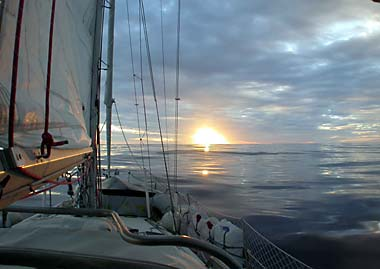
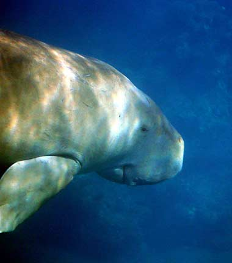
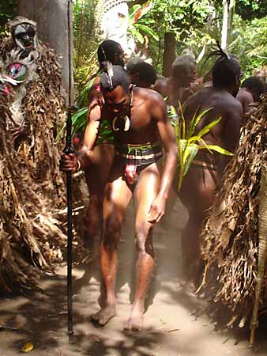

På Vanuatu er der malariamygg, hai, krokodiller og regnvêr… Det var ikkje vanskeleg å finne argumenter for å halde seg unna. Samstundes lokka tradisjonelle stammefolk, kunstverk, magi og ' vulkanar. "Du, skal vi berre droppe Vanuatu..?", var ein setning som gjekk igjen mellom oss. Heldigvis blei det endelege svaret "nei".
Vi svelger lariam-tablettar med ufyselege grimasar og knaskar B-vitaminar som drops (som gjer at huda vår smakar som lariamtablettar). Vi tilbringer nettene i ein spindelvev av myggnetting og nyter Vanuatu i fulle drag.

Vi får ein deilig seglas frå Fiji. Sterk vind, svak vind, spinnakervind, ingen vind… Det går sakte, men dagane er gode. Tida på havet er som ein liten "time out", tid til å fordøye og tid til å førebu. Vi kjem fram etter 4 dagar og 8 timar på havet. Akkurat som eg gjetta før vi la ut. Det var uheldigvis ingen som vedda i mot, så det blei dårleg forteneste.Vi har kursen mot hovudstaden Port Vila som er ein liten by med fargerike hus og venlege menneske. Her er fransk supermarknader og bugnande frukt og grønsaksmarknad. Kvinnene kler seg i store kjolar med store blomar. Borna har store auge og store smil. Mennene har god tid. På marknaden et vi lunsj til 15 kroner, og er mette resten av dagen.
Colaflasker frå andre verdskrig
Etter nokre dagar i hovudstaden, reiser vi nordover til det verkelege Vanuatu. Til eit Vanuatu som er som det har vore i tusenvis av år. Vi tar ein mellomstopp i Havanna, der amerikanarane hadde base under andre verdskrig medan dei jakta på japanarane. Vanuatu var aldri involvert i krigen, anna enn å huse amerikanarane og deira colaflasker. Langs vegane i Havanna, står der bodar der det vert solgt frukt, grønsaker og amerikanske colaflasker frå andre verdskrig.
Ernest, ein mann på 65, fortel at han hugsar amerikanarane som svært hyggelege, og at han framleis kan hugse smaken av søt lemonade dei gav han. Den blanke på blanke flasker, den raude på brune flasker og cola på lysegrøne flasker. Ernest viser oss flaskesamlinga si. Colaflaskene har stempel i bunn som seier kvar i USA flaska er laga. Ernest har over 300 ulike stempel på flaskene sine. Dette kvalifiserer til den største samlinga i Stillehavet.
Sjøku på Epi
Petrell tar oss vidare nordover. Det er lørdag og lariam-dag. Lariamtabletten murrar i magen, og gjer seglasen lang og kvalm. Tidleg neste morgon kastar vi anker utanfor øya Epi. Her blir vi kjent med Fru Dugong som er ei sjøku som gressar på bunn under Petrell. Stor, rund og to meter lang, gressar ho der med eit lite smil om munnen. Det kan like gjerne vere Herr Dugong. Kva veit vi? Men vi har lest Da Vinci koden, og veit kva smilet til Mona Lisa tyder.
Dugongen er eit fascinerande dyr, og bryr seg lite om dei to norske turistane som kretsar rundt i vassflata. Sjøkua har anna, og mogeleg betre, selskap enn oss. Rundt sjøkua kretsar nemleg mengder av store skilpadder, som med sine små luffer svever rundt i vatnet.

I Epi vert vi kjent med familien Petty, som fartar rundt i ein 60-fots cruising-racer kalla Roxane. Båten er lekker, og tar nattesvevnen frå Frode. Stadig dukkar det opp "tenk om…"-reknestykker som "Tenk om vi hadde hatt ein sånn båt, då ville vi hatt ein snittfart på 12 knop i staden for 5… Det vil seie halvarten så mange nattevakter".
Vulkan-ånder
Øya Ambrym for oss vore eit viktig mål på Vanuatu. Dette er ei vulkanøy, der folk framleis trur på ånder og magi. Vi har lyst å gå til vulkanen, og snakkar med ein lokal vulkanguide. Han seier vi er heldige som kom til Ambrym før september, for i september byrjar yam-sesongen (ei slags rot), og då er det slutt på turane til vulkanen. Vi ser ut som nokre spørsmålsteikn. Han forklarar at vulkan-ånden vil ha fred. Om folk ikkje respekterer dette, vil vulkanen få utbrot og sende ut aske som vil øydelegge yam-avlinga.
Vi er heldige, og får vere med til vulkanen. Turen går gjennom jungel, lava sand liggande, lavasand ståande og lavasand svevande. Det er ein lang tur, men guiden vår viser oss skattar undervegs: Bambus-snack, rennande mineralvatn frå ei grein og urgamle treutskjæringar som står som einaste bevis på at forfedrane ein gong budde spreidd oppe i jungelen.
Vi traskar avgarde. Siste stykket opp til vulkankrateret må vi tråkke i fin-fint askestøv som mest av alt minnar om nysnø (guiden hadde litt problemer med å seie seg einig der… Kanskje ville han seie at nysnø minna om aske?). Truger hadde vore bra.
Krateret er voldsomt, vatn kokar, vulkanen sukkar og åndene snorkar der nede i det svarte holet. Krateret strekker seg fleire hundre meter i diameter. Full av ærefrykt og svimmelhet (fordi det var høgt eller fordi vi var dødsslitne?). Der nede brummar kjerna som ein gong forma øya. Det er storleg.
Stammeseremoni
På Ambrym er det ein landsby som heiter Fanla. Den ligg langt oppe i jungelen, og har tatt vare på gamle tradisjonar og gamal tru. Rom-dans er ein gamal stammeseremoni i denne landsbyen. Vi har igjen med oss ein guide. Litt for å vise oss vegen opp til landsbyen, men eg trur det er mest for å passe på at vi ikkje gjer noko som er tabu eller som vi irritere åndene.
Rom tyder maske. Sjølve seremonien handlar om ei jente som laga ei maske for å imponere ein mann ho var forelska i. Ho tok på seg maska og lokka mannen med seg ut i skogen. Først der tok ho av seg maska og viste mannen kven ho verkeleg var. Historia manglar eit lite ledd her, vart han skremt? Likte han ho betre med maske på?

Det som til slutt skjer, er at mannen får vete korleis ho laga maska (han må ha vorte imponert) og drep jenta. Deretter byrjar han å lage slike masker sjølv og bevarar løyndomen og rettigheita til å lage slike masker. Den dag i dag, er det tabu med kvinner til stades når like masker vert laga.Inga hyggeleg historie, men den utvikla seg til ein veldig interessant seremoni. Ti-talls menn kler seg i anten omtrent ingenting, eller i bananblader frå topp til tå, bærer store fargerike masker og dansar, trampar, ropar og syng. Damer i bastskjørt svingar seg. Ein mann med maske spring vekk. Snart kjem han springande tilbake. Vi må gjere det gamle trikset, knipe oss i armen. Vi må kjenne at vi er vakne, at året er 2005 og innsjå at det framleis finnast stammar med seremoniar som dette.
Tilbake i hovudstaden
På Vanuatu er det slik at vi må vise oss for imigrasjonsmyndigheitene ein gong i månaden. Ein månad er gått, og vi hastar oss tilbake til hovudstaden Port Vila. Petrell smyger seg sørover mot vind og vêr, 25 grader krenging, 6,5 knop, elegant. Eit stempel i passet, eit stempel i minneboka. Neste stopp er New Caledonia.
{kind=link}
{kind=link}
{kind=link}
{kind=link}
{kind=link}
{kind=link}
{kind=link}
{kind=link}
{kind=link}
{kind=link}
{kind=link}
{kind=link}
{kind=link}
{kind=link}